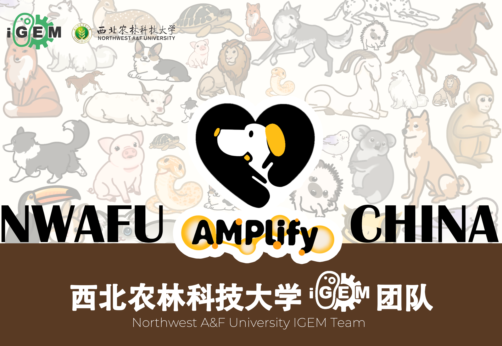

About Me
Hi there! I am Binyu Dong (Chinese name: 董滨语), a junior undergraduate student majoring in Biotechnology at Harbin Institute of Technology, expected to graduate in June 2027.
Over the past two years, I have received rigorous research training in molecular biology and biomaterials science. Working in active research laboratories has equipped me with solid experimental capabilities and the intellectual independence to design and troubleshoot complex experiments.
My research interests lie at the intersection of biomaterials and molecular biology, with a particular focus on:
- Development of functional hydrogels for tissue engineering and wound repair
- Molecular mechanisms of inflammation and tissue regeneration
- Innovative detection methods for biological processes
I am passionate about applying interdisciplinary approaches to solve biological problems, which aligns with my current work on hydrogel-based wound repair in diabetic models. I am always open to academic discussions and potential collaborations.
Feel free to reach out to me at binyudong@foxmail.com or check out my GitHub for my projects.
📅 Recent Updates
- 2025.06: Joined Professor Qiuyue Ma's Lab at the School of Medicine and Health, HIT, working on hydrogel materials for diabetic wound repair.
- 2025.07: Attended the International Summer School at Westlake University.
- 2025.07: Participated in the Quantitative Biology Summer Training Program at Peking University (CLS Project).
- 2024.09: Joined Professor Chen Zheng's Lab at the Life Science Center, HIT, focusing on protein translation efficiency detection.
- 2024.02: Received the National Scholarship (highest honor for undergraduates in China).
- 2024.02: Awarded the "Excellent Student" title at Harbin Institute of Technology.
- 2024.02: Received Honorable Mention (H Award) in MCM/ICM 2024 as the team programmer.
- 2024.01: Became principal of a provincial-level Undergraduate Innovation and Entrepreneurship Training Program.
- 2024.01: Attended the Winter Training Program at Beijing Institute for Brain Research.
🔬 Research Experience
Professor Qiuyue Ma's Lab, School of Medicine and Health, Harbin Institute of Technology
Undergraduate Researcher | June 2025 - Present
- Systematically mastered full-process experimental techniques for hydrogel-based wound repair in diabetic rat models
- Independently established diabetic rat models, created standardized oral ulcer and skin wound models
- Proficient in hydrogel preparation, characterization, local administration, and wound healing monitoring
- Conducted independent data analysis including histopathological staining, immunohistochemistry, and cytokine expression detection
Professor Chen Zheng's Lab, Life Science Center, Harbin Institute of Technology
Undergraduate Researcher | September 2024 - June 2025
- Participated in two projects: protein translation efficiency detection and hydrogel anti-inflammatory research
- Mastered core molecular biology techniques: molecular cloning, co-IP, Western blotting, frozen sectioning, RNA extraction
- Developed a novel assay for protein translation efficiency detection
- Demonstrated ability to design experimental protocols independently based on results
Academic Training Programs
- Summer 2025: International Summer School, Westlake University
- Summer 2025: Quantitative Biology Summer Training Program, CLS Project, Peking University
- Winter 2024: Winter Training Program, Beijing Institute for Brain Research
🎖 Honors and Awards
- National Scholarship (2024) - Highest honor for undergraduates in China
- Second-Class People's Scholarship, Harbin Institute of Technology (2024)
- Excellent Student, Harbin Institute of Technology (2024)
- Honorable Mention (H Award), 2024 Mathematical Contest in Modeling (MCM/ICM)
- Project Principal, Provincial-level Undergraduate Innovation and Entrepreneurship Training Program (2024)
📖 Education
Harbin Institute of Technology
B.S. in Biotechnology | August 2023 - Present (Expected June 2027)
Academic Performance: Top 15% in major
Selected Key Courses & Grades:
- Inorganic Chemistry: 93/100 (Rank 1/51, Top 2%)
- Immunology: 93.4/100 (Rank 1/16)
- Genetics: 92.8/100 (Rank 19/51)
- Organic Chemistry: 91.1/100 (Rank 10/106)
- Cell Biology: 90.6/100 (Rank 15/51)
- Molecular Biology: 88.8/100 (Rank 16/51)
- Biochemistry: 83.8/100 (Rank 17/51)
🛠 Skills
Laboratory Techniques
- Molecular biology: Molecular cloning, co-immunoprecipitation, Western blotting, RNA extraction, frozen sectioning
- Biomaterials: Hydrogel preparation and characterization, in vitro/in vivo biocompatibility testing
- Animal models: Diabetic rat model establishment, wound model creation, tissue harvesting and processing
- Histology: H&E staining, immunohistochemistry, immunofluorescence
Computational & Language Skills
- Programming: Proficient in Python and R for data analysis and visualization
- Languages: Native Chinese, Fluent English (academic reading and writing)
- Software: Origin, ChemDraw, ImageJ, GraphPad Prism
🔥 Latest News
2026.04.15: I am deeply honored to be invited as an advisor by Hu Guohang, who became my closest friend during our studies at Westlake University. I am incredibly excited to join the iGEM journey this year, and I have set a goal to lead HIT's iGEM club before graduation. I firmly believe that the partnership between HIT and NWAFU will bring us great success at the iGEM Grand Jamboree in Paris!


